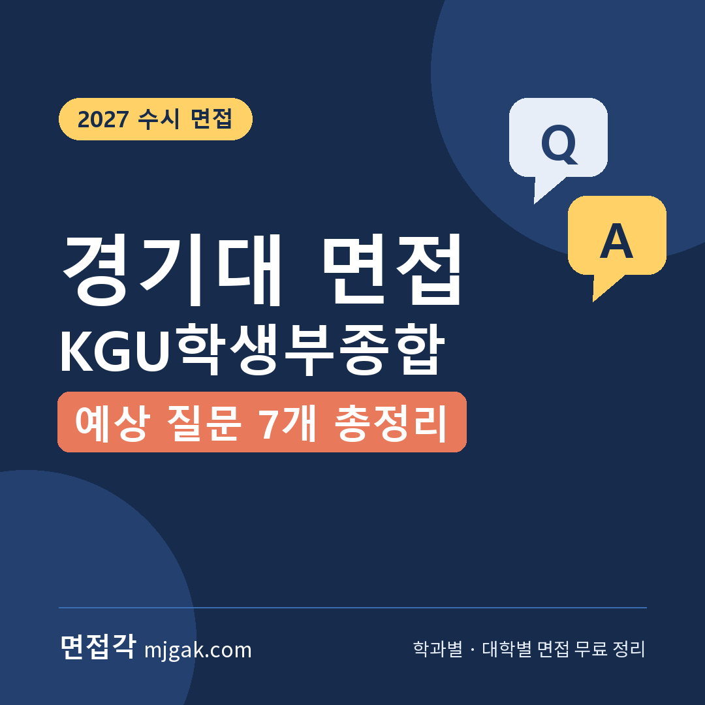
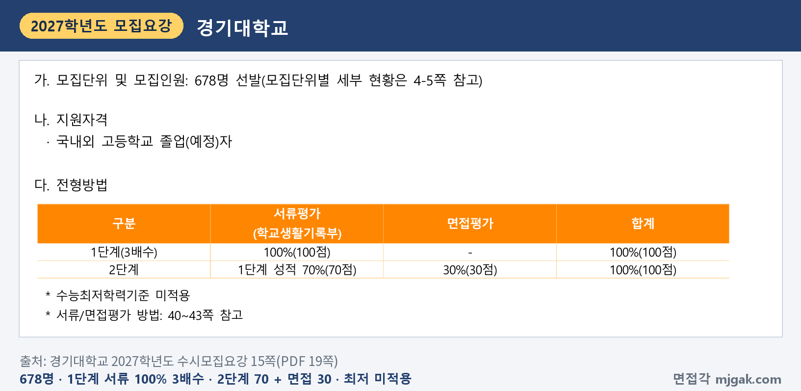
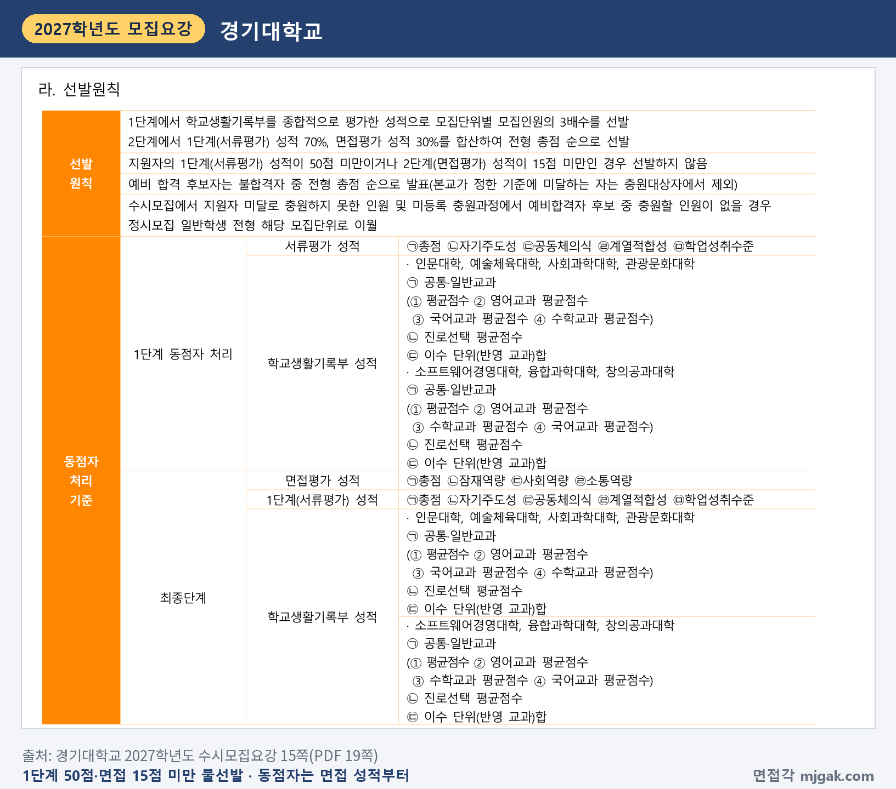
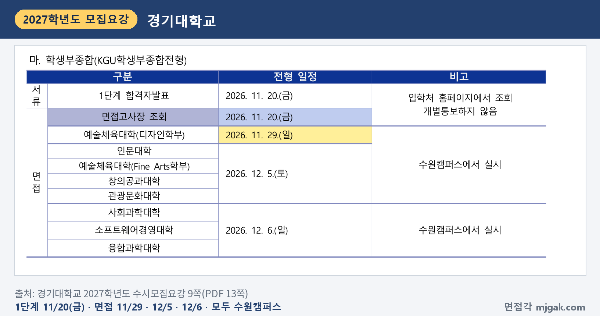
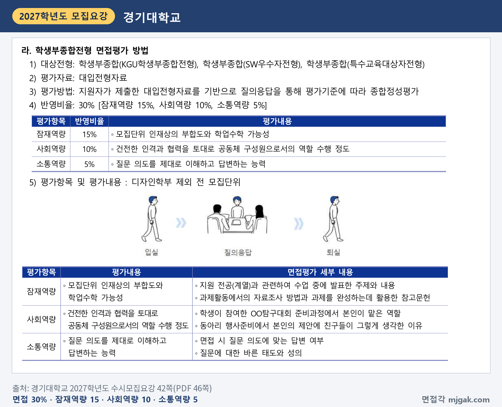
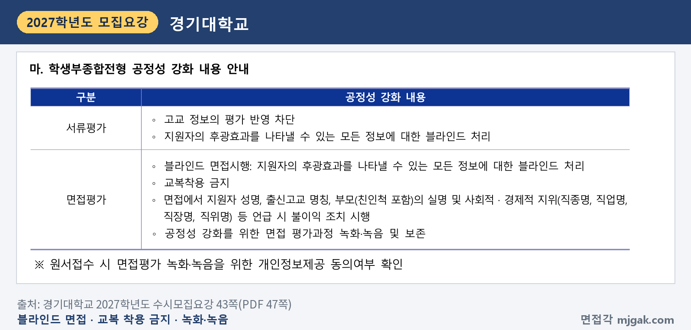
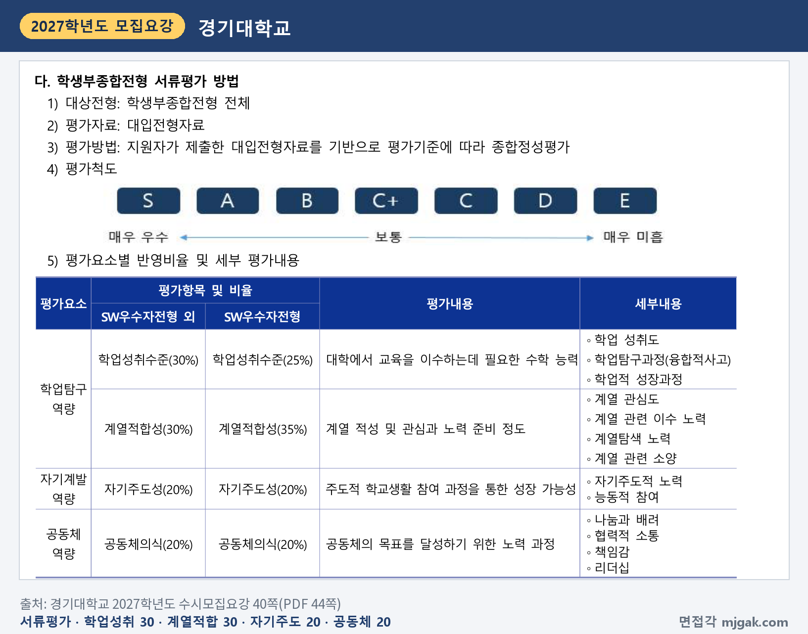
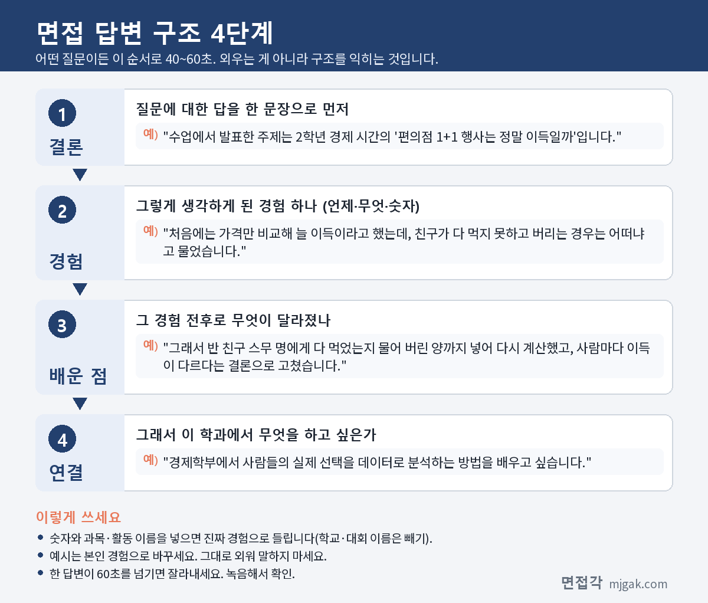
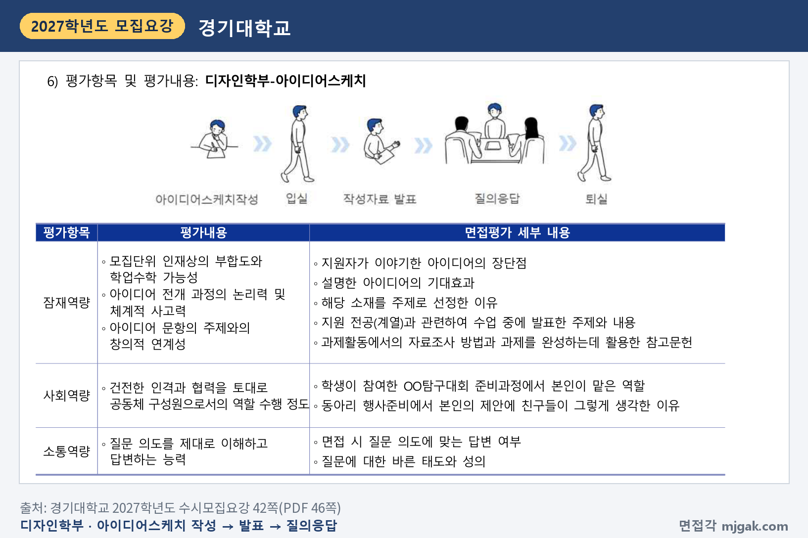

Ctrl+V (서식 유지됨)제목
본문 (이 영역 전체가 복사됩니다)
📷 여기에 이미지 넣기 — 썸네일 — thumb-kyonggi.png (대표 이미지로 지정)
경기대 KGU학생부종합전형에서 먼저 챙길 것은 날짜와 장소입니다. 1단계 합격자 발표는 수능(11월 19일 목요일) 다음 날인 11월 20일(금)이고, 면접은 단과대학에 따라 11월 29일(일), 12월 5일(토), 12월 6일(일)로 나뉩니다. 서울캠퍼스 모집단위도 면접은 모두 수원캠퍼스에서 봅니다. 2단계는 1단계 성적 70%와 면접 30%를 합산하고, 면접 30점 가운데 15점 미만이면 선발하지 않습니다. 수능최저학력기준은 없습니다. 이 글은 경기대학교 2027학년도 수시모집요강을 바탕으로 전형 방법과 단과대학별 일정, 면접 방식, 모집요강에 실린 면접평가 세부 내용에서 뽑은 예상 질문 7개, 준비 순서를 정리했습니다. KGU학생부종합전형에 지원한 고3과 재수생이 읽으시면 됩니다.
1. KGU학생부종합전형, 2027학년도에는 어떻게 보나
KGU학생부종합전형은 678명을 뽑습니다(15쪽). 2026학년도 682명보다 4명 줄었습니다(3쪽). 지원자격은 국내외 고등학교 졸업(예정)자입니다(15쪽). 모집인원이 많은 곳은 글로벌어문학부 55명, 경영학부 52명, AI컴퓨터공학부 52명, 경제학부 42명이고, 서울캠퍼스 관광문화대학은 미디어영상학과 12명, 관광개발경영학과 20명, 관광문화콘텐츠학과 10명, 호텔외식경영학부 14명입니다(4·5쪽).
전형 방법은 1단계에서 학교생활기록부 서류평가 100%(100점)로 모집단위별 모집인원의 3배수를 뽑고, 2단계에서 1단계 성적 70%(70점)와 면접평가 30%(30점)를 합산합니다. 수능최저학력기준은 적용하지 않습니다(15쪽). 이 글에서 모집인원에 3을 곱해 계산하면 1단계 합격 규모는 전체 2,034명, 경영학부 156명입니다.
📷 여기에 이미지 넣기 — 캡처 1 — 경기대학교 2027학년도 수시모집요강 15쪽(PDF 19쪽): kyonggi-2027-kgu-method.png
1단계(서류평가) 성적이 50점 미만이거나 면접평가 성적이 15점 미만이면 선발하지 않습니다. 최종 동점자는 면접평가 성적(총점 → 잠재역량 → 사회역량 → 소통역량), 1단계 성적, 학교생활기록부 성적 순으로 가립니다(15쪽). 학교폭력 조치사항은 제1호~제3호를 서류평가에서 정성평가로 반영하고, 제4호~제9호는 부적격입니다(36쪽). 전형료는 80,000원이고, 1단계 불합격자에게는 별도 신청 없이 20,000원을 돌려줍니다(52·53쪽).
📷 여기에 이미지 넣기 — 캡처 2 — 경기대학교 2027학년도 수시모집요강 15쪽(PDF 19쪽): kyonggi-2027-kgu-rule.png
2. 언제 보나: 수능 다음 날 1단계 발표, 면접은 단과대학별 3일
일정은 날짜순으로 이렇습니다(9·10쪽).
- 11월 19일(목): 수능
- 11월 20일(금): 1단계 합격자 발표와 면접고사장 조회, 입학처 홈페이지(개별 통보하지 않음)
- 11월 29일(일): 예술체육대학 디자인학부
- 12월 5일(토): 인문대학, 예술체육대학 Fine Arts학부, 창의공과대학, 관광문화대학
- 12월 6일(일): 사회과학대학, 소프트웨어경영대학, 융합과학대학
- 12월 18일(금)까지: 최초 합격자 발표
- 12월 21일(월) ~ 23일(수) 16:00: 문서등록
1단계 발표에서 면접까지는 디자인학부 9일, 12월 5일 면접 15일, 12월 6일 면접 16일입니다(이 글에서 계산한 값). 전형 일정은 수원캠퍼스와 서울캠퍼스 공통이고, 모든 고사는 수원캠퍼스에서 실시합니다(9쪽).
📷 여기에 이미지 넣기 — 캡처 3 — 경기대학교 2027학년도 수시모집요강 9쪽(PDF 13쪽): kyonggi-2027-kgu-schedule.png
내 날짜는 소속 단과대학으로 찾습니다. 4·5쪽 표의 소속으로 정리하면 다음과 같습니다.
- 인문대학(12월 5일): 국어국문·영어영문·사학·문헌정보학과, 글로벌어문학부, 유아교육과
- 예술체육대학: 디자인학부(11월 29일), Fine Arts학부(12월 5일)
- 창의공과대학(12월 5일): 건축학과, 사회에너지시스템공학과, 기계시스템공학과, 전자공학부, 신소재화학공학부, 스마트시티공학부
- 관광문화대학(12월 5일): 미디어영상학과, 관광개발경영학과, 관광문화콘텐츠학과, 호텔외식경영학부
- 사회과학대학(12월 6일): 법학과, 무역학과, 공공안전학부, 사회복지·청소년학과, 공공인재학부, 경제학부
- 소프트웨어경영대학(12월 6일): 경영학부, 산업경영공학과, AI컴퓨터공학부
- 융합과학대학(12월 6일): 수학과, 화학과, 바이오융합학부
3. 면접은 어떻게 보나
면접은 지원자가 제출한 대입전형자료를 기반으로 질의응답을 통해 평가기준에 따라 종합정성평가합니다. 진행은 입실 → 질의응답 → 퇴실이고, 평가항목은 세 가지입니다(42쪽).
- 잠재역량 15%: 모집단위 인재상의 부합도와 학업수학 가능성
- 사회역량 10%: 건전한 인격과 협력을 토대로 공동체 구성원으로서의 역할 수행 정도
- 소통역량 5%: 질문 의도를 제대로 이해하고 답변하는 능력
모집요강은 항목마다 "면접평가 세부 내용"도 실었습니다(42쪽, 디자인학부 표에도 같은 내용이 들어 있습니다). 잠재역량은 "지원 전공(계열)과 관련하여 수업 중에 발표한 주제와 내용", "과제활동에서의 자료조사 방법과 과제를 완성하는데 활용한 참고문헌", 사회역량은 "학생이 참여한 OO탐구대회 준비과정에서 본인이 맡은 역할", "동아리 행사준비에서 본인의 제안에 친구들이 그렇게 생각한 이유", 소통역량은 "면접 시 질문 의도에 맞는 답변 여부", "질문에 대한 바른 태도와 성의"입니다. 면접 시간과 면접위원 수는 모집요강에 적혀 있지 않습니다.
📷 여기에 이미지 넣기 — 캡처 4 — 경기대학교 2027학년도 수시모집요강 42쪽(PDF 46쪽): kyonggi-2027-kgu-interview.png
블라인드 규정도 같이 보세요(43쪽). 지원자의 후광효과를 나타낼 수 있는 모든 정보를 블라인드 처리하고, 교복 착용은 금지입니다. 면접에서 성명, 출신고교 명칭, 부모(친인척 포함)의 실명과 사회적·경제적 지위(직종명, 직업명, 직장명, 직위명)를 말하면 불이익을 받습니다. 면접 평가 과정은 녹화·녹음해 보존합니다.
📷 여기에 이미지 넣기 — 캡처 5 — 경기대학교 2027학년도 수시모집요강 43쪽(PDF 47쪽): kyonggi-2027-kgu-blind.png
서류평가 기준도 면접 준비에 쓰입니다. 대입전형자료를 기반으로 종합정성평가하고, 학업성취수준 30%, 계열적합성 30%, 자기주도성 20%, 공동체의식 20%를 반영하며, 평가척도는 S부터 E까지입니다(40쪽). 면접이 그 자료를 기반으로 묻는 자리이니, 네 요소에 해당하는 활동을 학생부에서 미리 골라 두세요.
📷 여기에 이미지 넣기 — 캡처 6 — 경기대학교 2027학년도 수시모집요강 40쪽(PDF 44쪽): kyonggi-2027-kgu-document.png
4. 면접평가 세부 내용에서 뽑은 예상 질문 7개와 답변법
모집요강에는 면접 질문이 실려 있지 않습니다. 아래 질문 7개는 모두 대학이 공개한 질문이 아니라 이 글이 만든 예상 질문입니다. 질문 1~4는 42쪽 면접평가 세부 내용을 질문 문장으로 바꾼 것이고, 질문 5~7은 평가내용에서 정리한 것입니다. 괄호의 평가항목은 이 글에서 연결한 것입니다. 예시 답변은 모집단위를 바꿔 가며 쓴 가상의 예시이니 본인 학생부의 활동으로 바꾸세요.
▶ 질문 1. 지원 전공과 관련해 수업 중에 발표한 주제와 내용을 말해 보세요. (잠재역량)
왜 묻나: 잠재역량의 세부 내용 첫 줄이 "지원 전공(계열)과 관련하여 수업 중에 발표한 주제와 내용"입니다.
답변 구조: 발표 주제 한 문장 → 처음 결론의 빈틈 → 고친 방법 → 학과에서 배울 것.
답변 예시 (경제학부):
"수업에서 발표한 주제는 2학년 경제 시간의 '편의점 1+1 행사는 정말 이득일까'입니다. 처음에는 가격만 비교해 늘 이득이라고 했는데, 친구가 다 먹지 못하고 버리는 경우는 어떠냐고 물었습니다. 그래서 반 친구 스무 명에게 다 먹었는지 물어 버린 양까지 넣어 다시 계산했고, 사람마다 이득이 다르다는 결론으로 고쳤습니다. 경제학부에서 사람들의 실제 선택을 데이터로 분석하는 방법을 배우고 싶습니다."
주의: 주제 이름만 말하지 말고, 발표하면서 바뀐 생각 하나를 넣으세요.
▶ 질문 2. 과제를 할 때 자료는 어떻게 조사했고, 어떤 참고문헌을 썼나요? (잠재역량)
왜 묻나: 같은 항목의 세부 내용 "과제활동에서의 자료조사 방법과 과제를 완성하는데 활용한 참고문헌"을 질문 문장으로 바꾼 것입니다.
답변 구조: 과제 한 문장 → 처음 조사 방법의 한계 → 바꾼 방법 → 남은 생각.
답변 예시 (문헌정보학과):
"청소년 독서량이 줄었다는 주장을 확인하는 과제에서, 처음에는 인터넷 기사 세 개를 모았는데 기사마다 숫자가 달랐습니다. 그래서 기사가 인용한 원래 조사 보고서를 찾아 조사 연도와 대상을 비교했고, 같은 기관이 해마다 낸 조사만 골라 다시 정리했습니다. 참고문헌에는 기사 대신 그 보고서와 학교 도서관에서 찾은 독서교육 책 한 권을 적었습니다. 정보의 출처를 거슬러 올라가는 일을 문헌정보학에서 제대로 배우고 싶습니다."
주의: 읽지 않은 자료를 말하지 마세요. 실제로 본 자료만, 기억나는 만큼 말하면 됩니다.
▶ 질문 3. 탐구대회를 준비하면서 본인이 맡은 역할은 무엇이었나요? (사회역량)
왜 묻나: 사회역량의 세부 내용에 "학생이 참여한 OO탐구대회 준비과정에서 본인이 맡은 역할"이 있고, 그 문장을 질문으로 바꿨습니다.
답변 구조: 대회와 팀 → 내 역할 → 막힌 점과 바꾼 것 → 배운 점.
답변 예시 (건축학과):
"과학 탐구대회에서 '교실 창문 방향에 따른 오후 온도 차이'를 네 명이 준비했고, 저는 측정 계획을 맡았습니다. 처음에는 각자 편한 시간에 재서 값이 들쭉날쭉했습니다. 그래서 측정 시각과 온도계 위치를 정한 표를 만들어 나눠 주고, 2주 동안 같은 조건으로 다시 쟀습니다. 같은 조건을 맞추는 일이 팀의 결과를 믿을 수 있게 만든다는 것을 배웠고, 건축학과에서 햇빛과 열을 고려한 설계를 배우고 싶습니다."
주의: 수상 결과보다 내가 맡은 일과 바꾼 것을 말하세요.
📷 여기에 이미지 넣기 — 이미지 1 — 제미나이 생성: 초겨울 오후 햇살이 드는 캠퍼스 라운지에서 경제 그래프 노트·참고도서·건축 모형·요리 동아리 메뉴 카드 옆에서 답하는 남학생(실사), 경기대 상징 교목 향나무·교화 백목련(겨울눈) / "제미나이 프롬프트 1"
(AI로 만든 이미지로, 실제 캠퍼스와 다를 수 있습니다)
▶ 질문 4. 동아리 행사를 준비할 때 낸 제안에 친구들은 왜 동의했나요? (사회역량)
왜 묻나: 세부 내용 "동아리 행사준비에서 본인의 제안에 친구들이 그렇게 생각한 이유"입니다. 이 문장이 가리키는 것은 내 제안 자체가 아니라 친구들이 그렇게 생각한 이유입니다.
답변 구조: 내 제안 → 친구들이 동의한 이유 → 반영한 다른 의견 → 결과와 배운 점.
답변 예시 (호텔외식경영학부):
"요리 동아리 축제 부스에서 저는 메뉴를 세 가지에서 한 가지로 줄이자고 제안했습니다. 친구들이 동의한 이유는 작년에 메뉴가 많아 주문이 밀리고 줄을 서던 손님이 돌아갔던 것을 모두 기억했기 때문입니다. 아쉬워한 친구의 의견을 받아 한 메뉴에 토핑을 고르게 했고, 줄이 작년보다 빨리 줄었습니다. 손님을 기다리게 하지 않는 운영이 서비스의 시작이라는 것을 배웠습니다."
주의: "친구들이 제 말을 따랐습니다"로 끝내지 마세요. 친구들의 이유를 말하는 질문입니다.
▶ 질문 5. 이 모집단위에 지원한 이유와 입학 후 계획을 말해 보세요. (잠재역량: 모집단위 인재상의 부합도)
왜 묻나: 잠재역량의 평가내용 첫머리가 "모집단위 인재상의 부합도"입니다. 모집요강에는 모집단위별 인재상 문구가 따로 실려 있지 않으니, 지원 학과 홈페이지의 학과 소개를 한 번 읽어 두세요.
답변 구조: 지원 이유 한 문장 → 그 이유가 된 경험 → 그 경험에서 한 일 → 입학 후 배울 것.
답변 예시 (공공안전학부 경찰행정학전공):
"경찰행정학전공에 지원한 이유는 안전이 단속보다 예방에서 시작된다는 것을 직접 봤기 때문입니다. 2학년 때 학생회에서 등굣길 사고가 잦은 횡단보도를 조사해 보니, 신호가 짧아 학생들이 뛰어서 건너고 있었습니다. 이를 정리해 학교에 건의했고, 등교 시간 교통 지도가 생긴 뒤 뛰는 학생이 줄었습니다. 입학하면 사고와 범죄를 예방하는 정책을 배우고 싶습니다."
주의: "어릴 때부터 꿈이었다"로 시작하지 말고, 고등학교 때 한 일 하나로 이유를 보여 주세요.
▶ 질문 6. 학생부에서 가장 노력한 과목은 무엇이고, 어떻게 공부했나요? (잠재역량: 학업수학 가능성)
왜 묻나: 잠재역량에 "학업수학 가능성"이 있고, 서류평가의 학업성취수준 세부내용에도 "학업적 성장과정"이 있습니다(40쪽).
답변 구조: 과목 한 문장 → 막힌 원인 → 바꾼 공부 방법 → 그 뒤 달라진 점.
답변 예시 (AI컴퓨터공학부):
"가장 노력한 과목은 수학Ⅱ입니다. 1학기에 미분 문제를 자꾸 틀려 오답을 모아 보니, 계산보다 그래프로 생각하지 않은 것이 원인이었습니다. 그래서 문제마다 그래프를 먼저 그리고, 정보 시간에 배운 파이썬으로 함수 그래프를 그려 확인했습니다. 2학기에는 그래프 문제를 덜 틀렸고, 인공지능의 학습 원리에도 미분이 쓰인다는 것을 알게 되어 그 수학을 더 배우고 싶어졌습니다."
주의: 성적 숫자보다 공부 방법을 바꾼 과정을 말하세요.
▶ 질문 7. 방금 말한 설문 방법에 한계는 없었나요? (소통역량: 질문 의도에 맞는 답변)
왜 묻나: 소통역량의 세부 내용이 "면접 시 질문 의도에 맞는 답변 여부"입니다. 이 질문은 앞의 답에 이어서 묻는 경우를 가정한 예상 질문입니다. 묻는 것에 먼저 답하는 연습용으로 쓰세요.
답변 구조: 묻는 것에 바로 답 → 한계 한 가지 → 다시 한다면 바꿀 것.
답변 예시 (경제학부, 질문 1에 이어서):
"네, 한계가 있었습니다. 스무 명이 모두 같은 반이라 생활이 비슷한 학생들에게만 물었습니다. 다시 한다면 가족 수가 다른 사람들에게도 물어, 가족 수에 따라 1+1 행사의 이득이 달라지는지 비교해 보겠습니다."
주의: 한계를 물었는데 장점부터 말하지 마세요. 첫 문장에 답을 두세요.
5. 답변은 이 4단계로 만드세요
어떤 질문이든 결론 → 경험 → 배운 점 → 연결 순서로 40~60초 안에 말하세요. 아래 도식은 질문 1을 4단계로 쪼갠 것입니다.
📷 여기에 이미지 넣기 — 도식 — structure-kyonggi.png
6. 디자인학부는 11월 29일, 아이디어스케치를 더해서
디자인학부는 이 전형으로 24명을 뽑고(4쪽), 면접은 11월 29일(일)입니다(9쪽). 진행은 아이디어스케치 작성 → 입실 → 작성자료 발표 → 질의응답 → 퇴실입니다. 잠재역량에 "아이디어 전개 과정의 논리력 및 체계적 사고력", "아이디어 문항의 주제와의 창의적 연계성"이 더해지고, 세부 내용에 아이디어의 장단점, 기대효과, 그 소재를 주제로 고른 이유가 들어갑니다(42쪽). 모집요강에 실린 2026학년도 기출 문항은 주거지역 전봇대나 지하철역 입구 주변의 쓰레기 무단투기 문제를 해결할 공공디자인 아이디어를 글로 설명하고 스케치로 표현하는 것이었습니다(43쪽). 작성 시간과 준비물은 모집요강에 적혀 있지 않습니다.
📷 여기에 이미지 넣기 — 캡처 7 — 경기대학교 2027학년도 수시모집요강 42쪽(PDF 46쪽): kyonggi-2027-kgu-design.png
7. 10월 26일(월)부터 면접 당일까지 준비 순서
10월 26일(월) ~ 11월 18일(수): 수능 공부가 먼저이니 주말에 조금씩 합니다. 1단계 발표가 수능 다음 날이라 발표 전에 할 일은 소재 고르기입니다. 학생부에서 수업 발표, 과제의 자료조사, 탐구대회, 동아리 행사를 하나씩 찾아 질문 1~4의 초안을 만들고, 메모에서 이름·학교 이름·부모 직업이 드러나는 표현을 지웁니다.
11월 19일(목): 수능.
11월 20일(금), 1단계 발표: 입학처 홈페이지에서 합격 여부와 면접고사장을 직접 조회합니다. 개별 통보는 없습니다(9쪽). 내 단과대학의 면접 날짜를 다시 확인합니다.
11월 21일(토) ~ 면접 사흘 전: 질문 1~7을 내 학생부로 다듬습니다. 답마다 "그 방법에 한계는 없었나요?"를 한 번 더 받고 이어 말해 봅니다(질문 7 연습). 디자인학부는 공공디자인처럼 생활 속 문제를 하나 정해 아이디어를 그리고 장단점과 기대효과를 말로 설명해 봅니다.
면접 이틀 전 ~ 전날: 모의 면접을 녹음해 60초를 넘는 답, 이름이나 학교 이름이 나오는 답을 고칩니다. 수험표를 출력하고 신분증을 챙깁니다(7쪽). 서울캠퍼스 모집단위도 면접은 수원캠퍼스이니 교통편을 확인합니다(9쪽). 새 답변은 만들지 않습니다.
면접 당일(11월 29일, 12월 5일 또는 6일): 교복은 입지 않습니다(43쪽).
12월 18일(금)까지: 최초 합격자 발표. 합격했다면 12월 21일(월) ~ 23일(수) 16시 문서등록을 놓치지 마세요(10쪽).
8. 경기대 KGU학생부종합전형 자주 묻는 것들
Q. 다른 대학 면접과 날짜가 겹쳐서 못 가면 전형료를 돌려받나요?
A. 아닙니다. 모집요강은 타 대학과의 전형일 중복(학생부종합 면접고사 응시대상자 포함)과 결시를 전형료를 반환하지 않는 사유로 적고 있습니다(53쪽). 1단계 불합격자에게 돌려주는 20,000원과는 다릅니다.
Q. 서울캠퍼스 학과인데 면접도 서울에서 보나요?
A. 아닙니다. 모든 고사는 수원캠퍼스에서 실시합니다(9쪽).
Q. 교과 문제를 푸는 면접인가요?
A. 모집요강의 평가방법은 지원자가 제출한 대입전형자료를 기반으로 한 질의응답입니다(42쪽). 디자인학부만 아이디어스케치 작성과 발표가 더해집니다.
Q. 면접 복장 규정이 있나요?
A. 교복 착용 금지가 있습니다(43쪽). 이 전형 면접의 복장 규정은 그것뿐입니다.
Q. 수능 최저가 있나요?
A. 없습니다(15쪽). 대신 면접 성적이 15점 미만이면 선발하지 않습니다.
9. 면접 전날 체크리스트
□ 질문 1~7을 각각 60초 안에 말할 수 있다
□ 수업 발표, 자료조사, 탐구대회, 동아리 행사 활동을 하나씩 골라 두었다
□ 한 답에 "한계는요?"를 받아도 첫 문장에 바로 답할 수 있다
□ 녹음으로 이름·학교 이름·부모 직업이 나오지 않는지 확인했다
□ 입학처 홈페이지에서 내 면접 날짜와 고사장을 확인했다
□ 수원캠퍼스까지 가는 길을 확인했고, 수험표와 신분증을 챙겼다
□ 교복은 입지 않는다
10. 같은 시기에 면접 보는 대학
경기대 면접일(11월 29일 일요일, 12월 5일 토요일·6일 일요일)과 같은 주말에 면접을 보는 대학입니다. 대학마다 모집단위별 날짜가 다르니 각 글에서 확인하세요.
▷ 건국대 KU자기추천 면접 총정리 (12월 5일·6일)
▷ 경희대 네오르네상스 면접 총정리 (12월 5일·6일)
▷ 숙명여대 숙명인재 면접 총정리 (11월 28일·29일)
11. 함께 보면 좋은 글
KGU학생부종합전형 면접은 외운 답을 들려주는 자리가 아닙니다. 학생부에 적힌 발표, 과제, 탐구대회, 동아리 활동에서 내가 한 일과 그 이유를 내 말로 설명하는 자리입니다.
※ 이 글의 내용은 경기대학교 2027학년도 수시모집요강에서 인용했습니다. 괄호 안 쪽수는 모집요강에 인쇄된 쪽수입니다. 예상 질문은 모집요강의 면접평가 세부 내용과 평가 항목을 바탕으로 정리한 것이며 대학이 공개한 질문이 아닙니다. 면접 고사장과 시간은 경기대 입학처 홈페이지 공지를 꼭 확인하세요.
경기대를 포함한 76개 대학의 2027학년도 면접 정보와 71개 학과별 면접 질문·답변 예시, 대학이 공개한 실제 면접 기출을 무료로 정리한 사이트입니다. 회원가입 없이 바로 볼 수 있고, 질문을 무작위로 뽑아 60초 타이머로 연습하는 모의 면접도 있습니다.
태그 (#은 에디터가 자동으로 붙이므로 그대로 붙여 넣어도 됩니다)
넣을 이미지 목록 (docs/promo/img 폴더)









제미나이 프롬프트 1 — 초겨울 오후 햇살이 드는 캠퍼스 라운지에서 경제 그래프 노트·참고도서·건축 모형·요리 동아리 메뉴 카드 옆에서 답하는 남학생(실사), 경기대 상징 교목 향나무·교화 백목련(겨울눈) (4:3) — 제미나이에 그대로 붙여 넣어 이미지를 만드세요